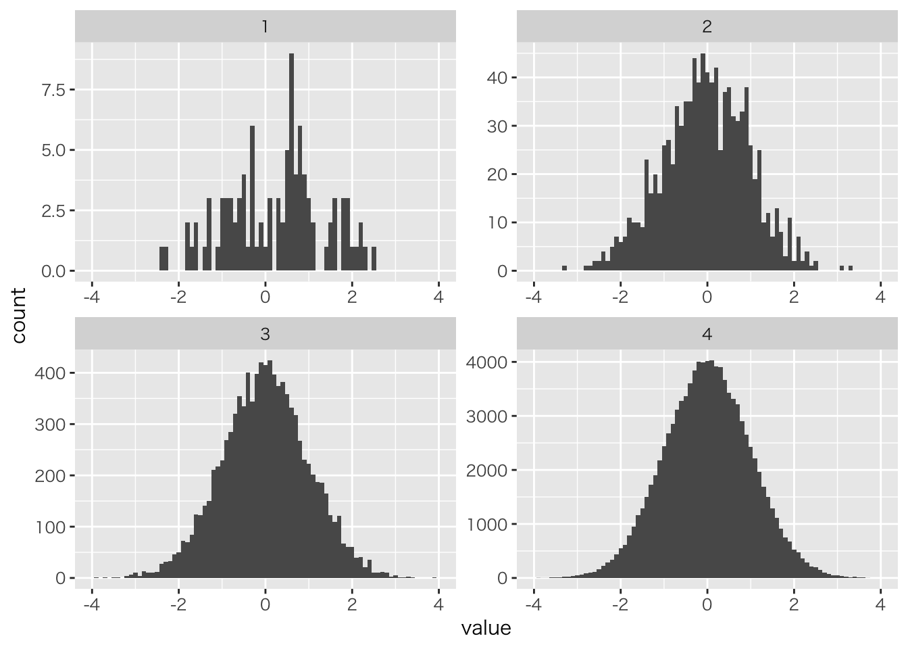
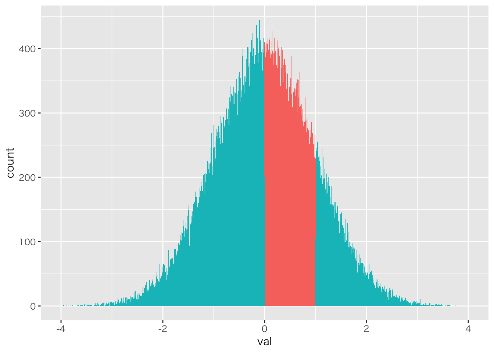

# データ整形汎用パッケージ
library(tidyverse)## ─ Attaching packages ────────── tidyverse 1.2.1 ─## ✔ ggplot2 3.0.0 ✔ purrr 0.2.5
## ✔ tibble 1.4.2 ✔ dplyr 0.7.6
## ✔ tidyr 0.8.1 ✔ stringr 1.3.1
## ✔ readr 1.1.1 ✔ forcats 0.3.0## ─ Conflicts ──────────── tidyverse_conflicts() ─
## ✖ dplyr::filter() masks stats::filter()
## ✖ dplyr::lag() masks stats::lag()# MCMC乱数発生器stanをRからつかうパッケージ
library(rstan)## Loading required package: StanHeaders## rstan (Version 2.17.3, GitRev: 2e1f913d3ca3)## For execution on a local, multicore CPU with excess RAM we recommend calling
## options(mc.cores = parallel::detectCores()).
## To avoid recompilation of unchanged Stan programs, we recommend calling
## rstan_options(auto_write = TRUE)##
## Attaching package: 'rstan'## The following object is masked from 'package:tidyr':
##
## extract# rstanを並列で使うオプション
options(mc.cores = parallel::detectCores())
# 変更なしの実行ファイルは保存しておくオプション
rstan_options(auto_write = TRUE)
# データ要約・可視化パッケージ
library(summarytools)
# 複数のグラフを並べて表示するパッケージ
library(gridExtra)##
## Attaching package: 'gridExtra'## The following object is masked from 'package:dplyr':
##
## combinelibrary(GGally)##
## Attaching package: 'GGally'## The following object is masked from 'package:dplyr':
##
## nasa# ベイズモデル比較指標計算パッケージ
library(loo)## This is loo version 2.0.0.
## **NOTE: As of version 2.0.0 loo defaults to 1 core but we recommend using as many as possible. Use the 'cores' argument or set options(mc.cores = NUM_CORES) for an entire session. Visit mc-stan.org/loo/news for details on other changes.# ベイズモデルの結果を可視化するパッケージ
library(bayesplot)## This is bayesplot version 1.6.0## - Online documentation and vignettes at mc-stan.org/bayesplot## - bayesplot theme set to bayesplot::theme_default()## * Does _not_ affect other ggplot2 plots## * See ?bayesplot_theme_set for details on theme setting# 描画の際に文字化けするMacユーザは次の行のコメントアウトをとって実行する
old = theme_set(theme_gray(base_family = "HiraKakuProN-W3"))# 数値例を発生
set.seed(12345)
# 標準正規分布から発生する100個の乱数をつくってみる
x100 <- rnorm(100,0,1)
# 一部表示
head(x100)## [1] 0.5855288 0.7094660 -0.1093033 -0.4534972 0.6058875 -1.8179560mean(x100) # 平均値## [1] 0.2451972var(x100) # 分散## [1] 1.242625sd(x100) # 標準偏差## [1] 1.114731max(x100) # 最大値## [1] 2.477111min(x100) # 最小値## [1] -2.380358median(x100) # 中央値## [1] 0.4837183# パーセンタイル
# 0%, 25%, 50%, 75%, 100%
quantile(x100,probs=c(0,0.25,0.5,0.75,1))## 0% 25% 50% 75% 100%
## -2.3803581 -0.5901091 0.4837183 0.9003897 2.4771109# 標準正規乱数1
x100.1 <- rnorm(100,0,1)
# 標準正規乱数2
x100.2 <- rnorm(100,0,1)
# 標準正規乱数3
x100.3 <- rnorm(100,0,1)
# それぞれの平均値
mean(x100.1)## [1] 0.04523311mean(x100.2)## [1] -0.04621158mean(x100.3)## [1] 0.2152759# 1000サンプル
x1000 <- rnorm(1000,0,1)
mean(x1000)## [1] -0.03272243# 10000サンプル
x10000 <- rnorm(10000,0,1)
mean(x10000)## [1] -0.004254936# 100000サンプル
x100000 <- rnorm(100000,0,1)
mean(x100000)## [1] 0.002199223# quantile関数でサンプルのパーセンタイル点を算出
quantile(x100000,probs=c(0,0.25,0.33,0.75,1))## 0% 25% 33% 75% 100%
## -4.5631823 -0.6735926 -0.4335554 0.6758085 5.5830210# 標準正規分布の理論的q点
qnorm(0.25,0,1)## [1] -0.6744898qnorm(0.33,0,1)## [1] -0.4399132qnorm(0.75,0,1)## [1] 0.6744898length(x100000[x100000<1.96])/length(x100000)## [1] 0.97464pnorm(1.96,0,1)## [1] 0.9750021# データをデータフレームにまとめる
data.frame(class=c(rep(1,NROW(x100)),
rep(2,NROW(x1000)),
rep(3,NROW(x10000)),
rep(4,NROW(x100000))),
value=c(x100,x1000,x10000,x100000)) %>%
# グループ名を作る変数を作成
mutate(class=as.factor(class)) %>%
# 作図。x軸は値。グループごとに分けたヒストグラム
ggplot(aes(x=value))+geom_histogram(binwidth = 0.1)+xlim(-4,4)+
facet_wrap(~class,scales = "free")## Warning: Removed 8 rows containing non-finite values (stat_bin).## Warning: Removed 4 rows containing missing values (geom_bar).
# 該当する列数/総列数
NROW(x100000[x100000>0 & x100000 <1])/NROW(x100000)## [1] 0.3428data.frame(val=x100000) %>% mutate(itg=ifelse(val>0&val<1,1,2)) %>%
mutate(itg=as.factor(itg)) %>%
ggplot(aes(x=val,fill=itg))+geom_histogram(binwidth = 0.01) +
xlim(-4,4) +theme(legend.position = "none")## Warning: Removed 8 rows containing non-finite values (stat_bin).